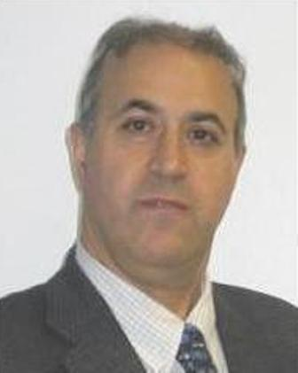

Biography

Dr. Bijan Jabbari
Professor, Electrical and Computer Engineering Department
The Volgenau School of Information Technology and Engineering
George Mason University
Fairfax, VA 22030-4444, USA
Tel : +1 703.993.1618
Email: 
Office: Engineering Building, Room 3232
Lab: Engineering Building, Room 3246
Bijan Jabbari is a professor of electrical and computer engineering
at George Mason University, Fairfax, Virginia, USA, and an
affiliated faculty with ENST- Paris, France. He has held industrial
positions with major communications service providers and networking
equipment organizations developing data communications products. He
has founded innovative laboratories for Internet and wireless
communications research and is conducting research through funding
provided by National Science Foundation and other funding
organizations. Dr. Jabbari was an International Division Editor for
Journal of Communications and Networks (JCN), an editor for the IEEE
Transactions on Communications and was on the editorial board of
Proceedings of the IEEE and several other journals. He is a coeditor
of recent books on Multiaccess, Mobility and Teletraffic (Kluwer
Publishing, Volume I and IV-VI) and continues research on
multiaccess and wireless communications, mobility and traffic
theory, and packet networks. He is the past chairman of the IEEE
Communications Society technical committee on Communications
Switching and Routing. He is a Fellow of IEEE and IEE, is a
recipient of the IEEE Millennium Medal in 2000 and the Washington
Metropolitan Area Engineer of the Year Award, in 2003. Dr. Jabbari
has been a technical advisor to the industry and government on
issues ranging from transport to switching and routing. He helped
industry adoption of MPLS by service providers and large
corporations in their networks. He received the Ph.D. degree from
Stanford University, Stanford, California, in electrical
engineering.
- Volunteer and Extra-curricular activities